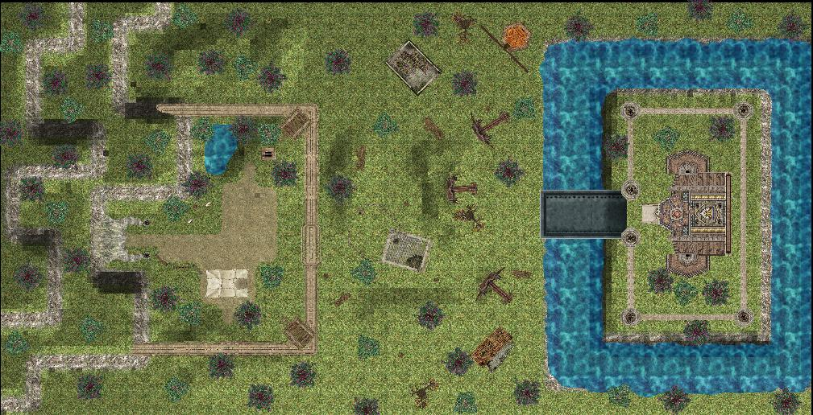
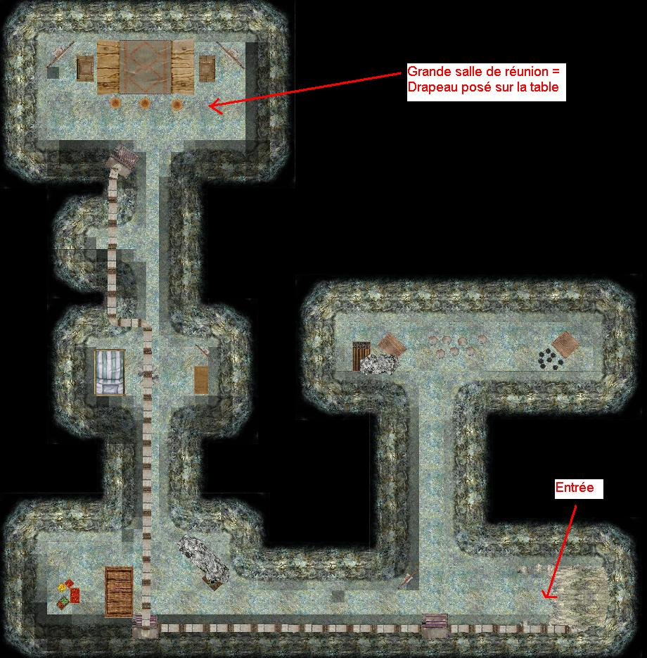
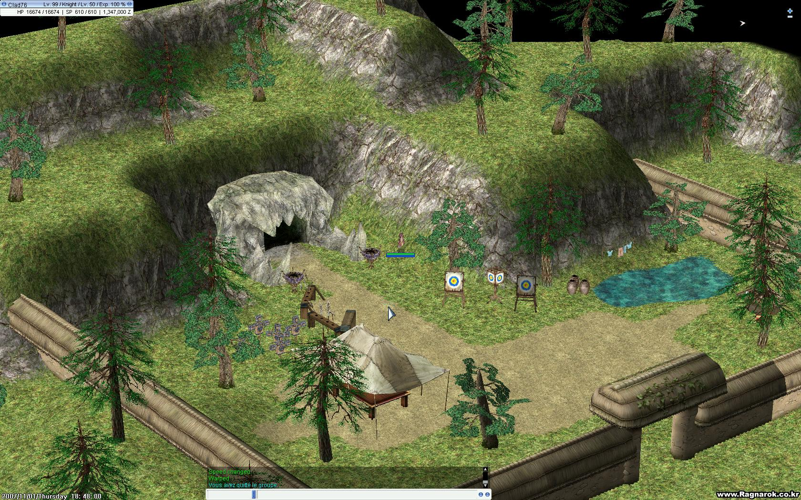
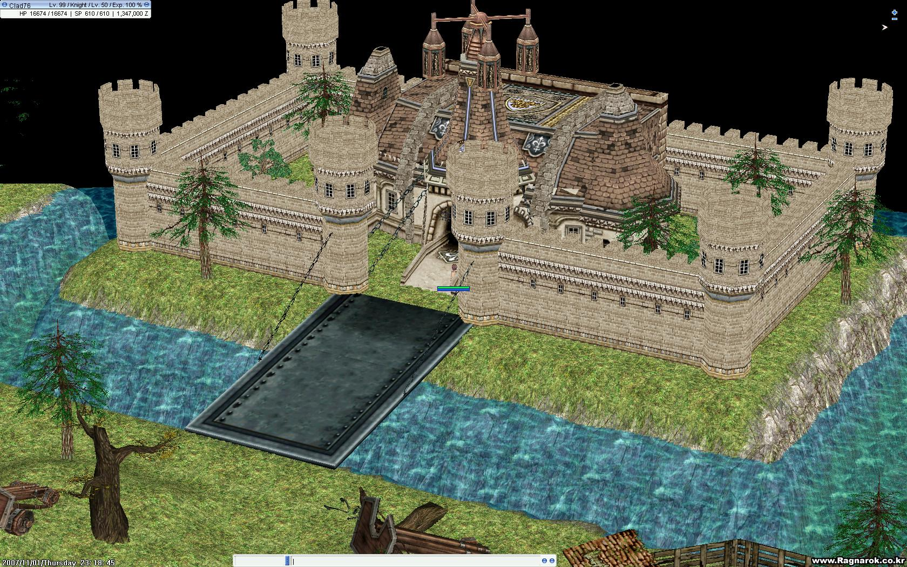
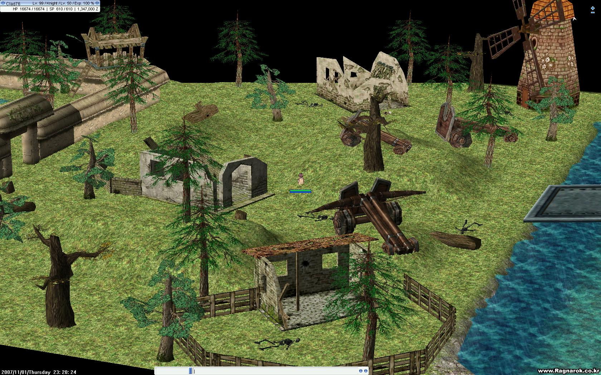
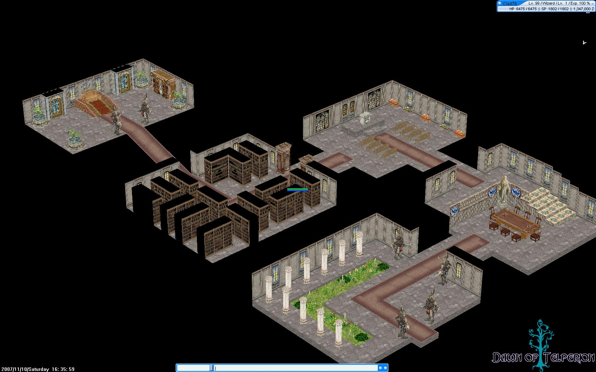

Par: Cid
Description: Jeu de Capture De Drapeaux (Capture The Flag) entre deux équipes.
Nécessite l'emploi d'une map custom (voir ci-dessous)
Nécessite l'emploi de sons wav customs (voir ci-dessous)
Fait appel à un cuttin custom (que vous pouvez modifier à votre guise).
Description étendue:
Le jeu fait s'affronter deux équipes sur un terrain adapté (voir map custom créée à cette occasion). Chaque équipe possède une base dans laquelle se trouve un drapeau à la couleur de l'équipe. Le but du jeu est de récupérer le drapeau ennemi dans la base ennemie puis de le rapporter dans sa propre base. Ceci a pour effet de marquer un point. On doit donc prendre le drapeau de l'équipe adverse, et le ramener dans son camp.
Pour s'inscrire il faut être dans une party. Seul le chef de l'équipe peut inscrire son équipe, et commencer le match.Deux types de matchs sont disponibles: match à points ou match à temps. Des paris sont également possibles.
A noter à propos du système d'inscription:
-> Les joueurs normaux ne peuvent rien faire avec le NPC et n'ont pas besoin de lui parler.
-> Le chef de la party s'inscrit une fois pour toute son équipe.
-> Si le chef se déconnecte, toute l'équipe est annulée.
-> Si un joueur est /invite après l'inscription de l'équipe, le NPC le signale mais il y a toujours moyen de lancer la partie (le nouveau joueur ne sera pas dans la partie sauf désinscription/réinscription).
Pour d'autres informations concernant les configurations possibles et les variables utilisées, se reporter au header du script.
Si vous souhaitez utiliser ce script, une map custom doit être utilisée. Il s'agit d'une map spécialement créée pour cet event par Clad et disponible dans le répertoire maps_custom. Apperçu:






Si vous souhaitez utiliser ce script, certains sons wav customs doivent être utilisés. Ils sont disponibles, ainsi qu'une BGM choisie par nos soins, dans le répertoire data_custom. Vous pouvez aussi les télécharger directement.
{kind=link}